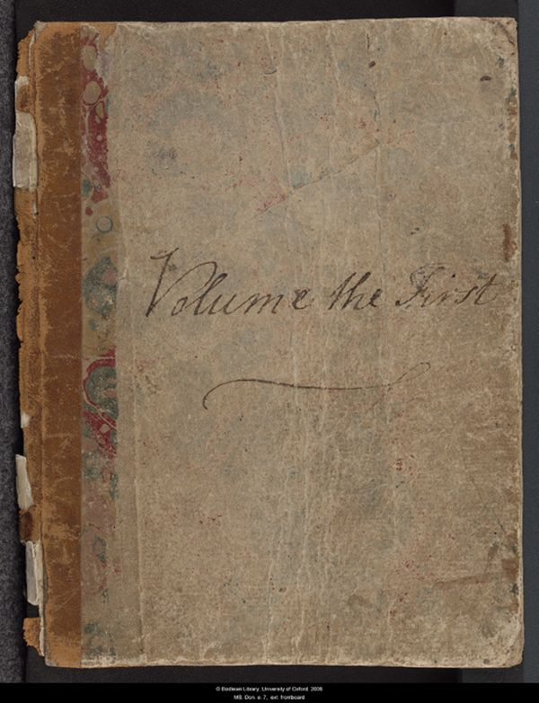
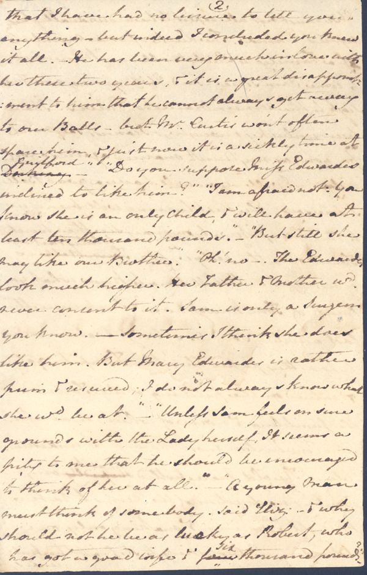
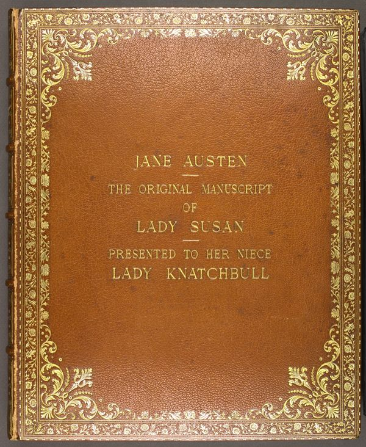
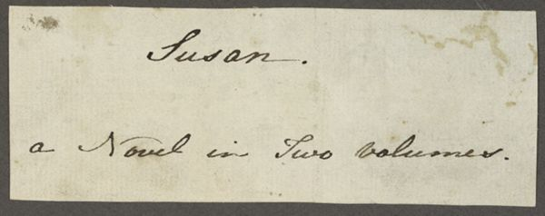
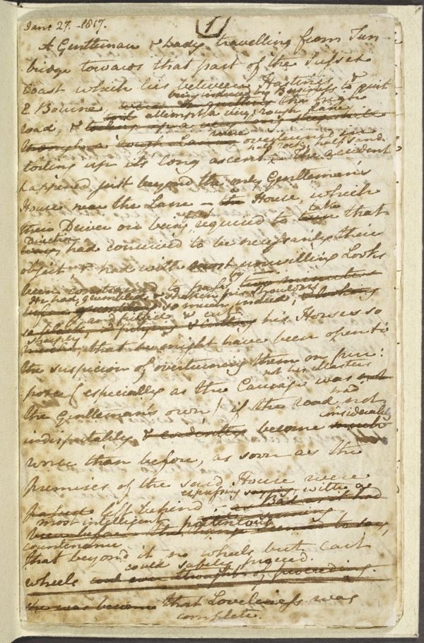
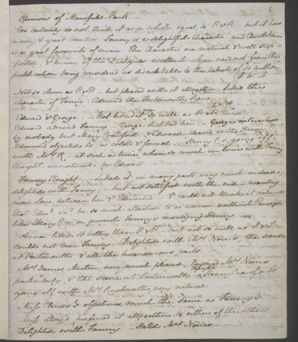
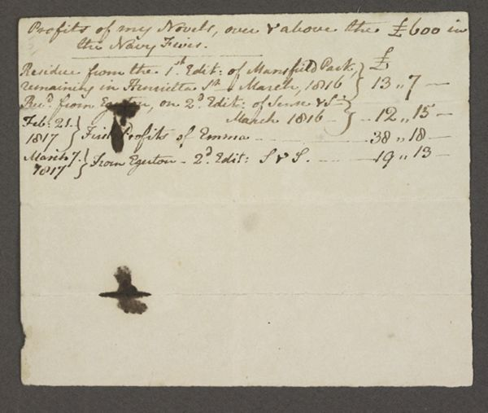
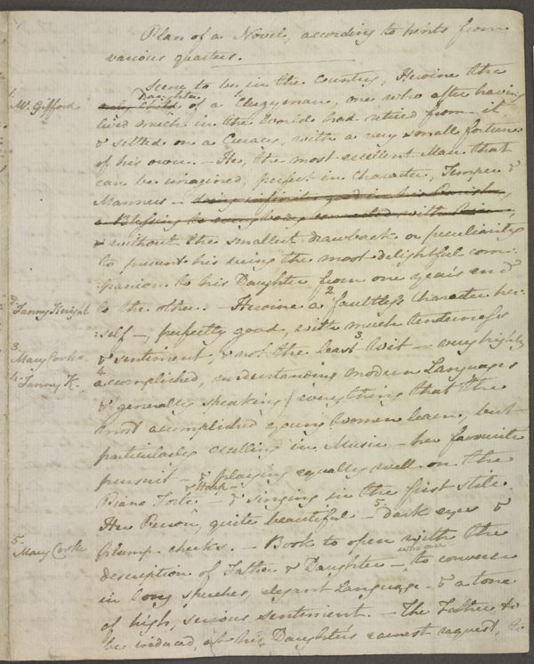

the Digital Collection
A curated repository of Jane Austen's draft manuscripts and fragments

Persuasion

Juvenilia

The Watsons

Lady Susan

Susan

Sanditon

Opinions of Mansfield Park, Opinions of Emma

Profits of my Novels
